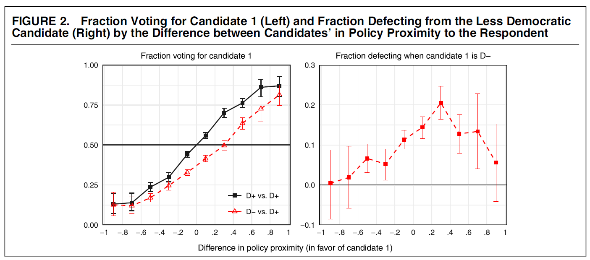
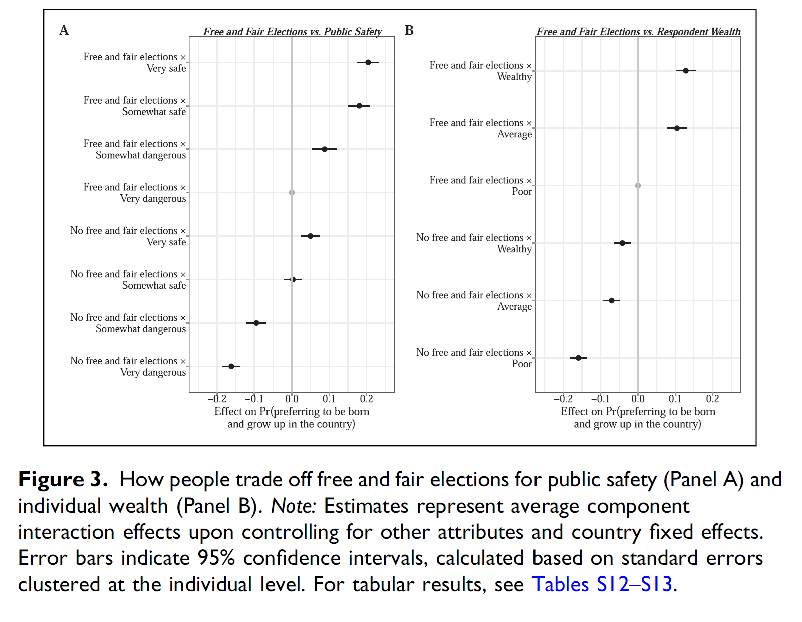
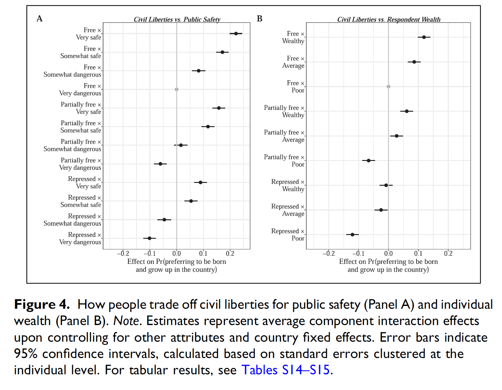
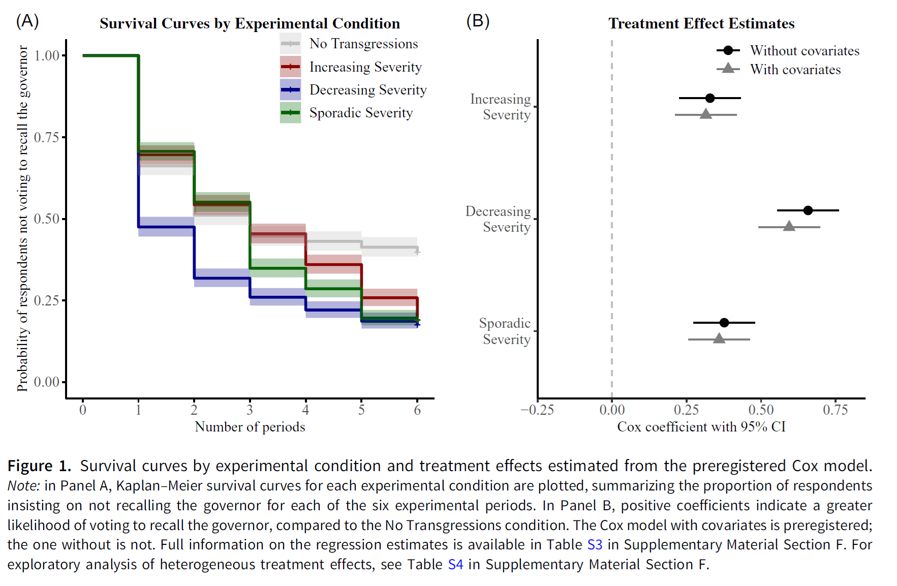
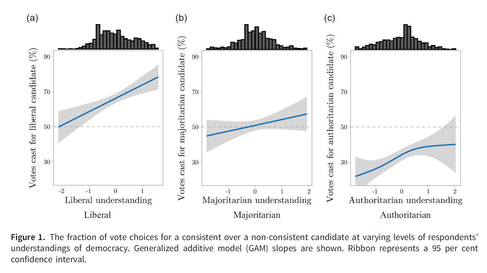

Democratic Values and Hypocrisy
The Politics of Democratic Backsliding
Session 09
University of Lucerne
Introduction
The democratic support paradox
Citizens display overwhelming support for democracy while democracy is on retreat
In session 08, we discussed how support can sustain democracy by moderating backsliding attempts by anti-pluralist incumbents
But how do citizens come to support authoritarian politicians in the first place?
Situating the paradox
Demand side
- Declining trust in representative institutions and weaker support for the liberal components of democracy (session 08)
Supply side
- Weakening of traditional party ties and detachment from mainstream parties (session 07)
These conditions may help understand why populist anti-establishment candidates have become more successful
Yet, we remain uncertain about the mechanisms driving support for these candidates when they openly attack democratic institutions
This session’s goals
- Understand the phenomenon of democratic hypocrisy and democratic trade-offs
- Explore whether divergent understandings of democracy explain support for backsliding leaders
- Discuss both mechanisms in relation to democratic backsliding
- Students’ presentation: the case of Nicaragua
Democratic hypocrisy
Milan Svolik
Slovak-American political scientist; Professor of Political Science at Yale University
Research on authoritarian rule, electoral accountability and democratic backsliding
Developed the most influential framework for studying citizens’ support for democratic backsliding
Democracy in America?
Graham & Svolik, 2020
The key mechanism of democratic self-defense: elections
Beyond abstract support for democracy, citizens can stop politicians who violate democratic principles by defeating them at the polls
But this check has a fundamental vulnerability: elections force voters to choose between conflicting considerations
Democratic principles
Free elections, civil liberties, checks and balances
Partisan interests
Party loyalty, policy preferences, ideology
Implication: polarization raises the price of choosing democracy over partisanship
The candidate-choice experiment
Graham & Svolik, 2020
Sample: 1,691 nationally representative US voters; 16 choices each (21,604 total); August-September 2018
Each respondent chooses between two candidates for state legislature, described by: age, gender, race, profession, experience, party, two policy platforms, and a democracy position
Democracy position is either neutral (generic, inconsequential statement; D1 treatment) or undemocratic (D2 treatment)
The undemocratic positions
Graham & Svolik, 2020
| Position | Democratic principle |
|---|---|
| Supported a redistricting plan giving own party 2 or 10 extra seats | Electoral fairness |
| Supported reducing polling stations in opposition areas | Electoral fairness |
| Said governor should rule by executive order if opposition does not cooperate | Checks and balances |
| Said governor should ignore unfavorable court rulings by opposition-appointed judges | Checks and balances |
| Said governor should prosecute journalists who accuse him without revealing sources | Civil liberties |
| Said governor should ban far-left or far-right group rallies | Civil liberties |
Findings I: Americans value democracy, but not much
Graham & Svolik, 2020
An undemocratic candidate loses only ~11.7% of overall vote share
In realistic partisan conditions (actual party and policy alignment), punishment drops to ~3.5%
Democracy weight estimated at 18% of the systematic variation in vote choice; party and policy jointly dominate
Benchmark: voters punish extramarital affairs and tax underpayment more severely than violations of democratic principles
Findings II: partisans first, democrats second
Graham & Svolik, 2020
Only ~13.1% defect from a co-partisan candidate for violating democratic principles
- Only independents and leaners support democratic candidates enough to defeat undemocratic ones regardless of partisanship
Partisan double standard: both Republicans and Democrats punish the other party’s violations more than their own (co-partisan bias estimated at 48.4%)
Centrists are the pro-democratic force: punish undemocratic behavior at 4x the rate of strong partisans
Platform polarization independently worsens the problem: greater distance between candidate platforms further reduces punishment

Findings III: natural experiment in Montana
Graham & Svolik, 2020
Natural experiment: 2017 Montana special election; candidate assaulted journalist on election eve
- Only day-of voters saw the signal; absentee voters (majority) had already voted; difference-in-differences design
Only moderate precincts punished the assault; in heavily partisan precincts, partisan loyalty trumped valence considerations
Your responses
“The construction of this experiment is only suited to a two party system, like the one of United States […] further research on this topic needs to develop a mathematical possibility to put in multiple parties.” (Pascal Tarnowski)
“The research design offers the respondents two options […] However, in multi-party democracies the options are not dichotomous. Not only have people the option to vote for different parties that align more, but it also allows for punishing anti-democratic behaviour.” (Stephanie Lindegger)
“Generally, voters are supposed to act as control mechanism to protect democratic principles. However, a coalition government could act as a second-tier mechanism to punish undemocratic behaviour.” (Stephanie Lindegger)
Replications and extensions
Graham and Svolik’s findings have been widely replicated and extended, and renamed as democratic hypocrisy (Simonovits, McCoy and Littvay, 2022)
The candidate-choice conjoint became the standard paradigm for studying democratic trade-offs:
Partisan loyalty overrides democratic principles in candidate choice across contexts, despite voters recognizing violations (Frederiksen, 2022, 2024)
Partisan effects are mixed or asymmetric across parties (Carey et al., 2019, 2020; Gidengil et al., 2022)
Affective polarization may matter less than expected (Broockman, Kalla & Westwood, 2023)
Democratic trade-offs beyond partisanship and the US
Chu, Williamson & Yeung, 2025
RQ: What would people trade democratic governance for across different countries and dimensions?
Design: cross-national conjoint experiment in 6 countries (Egypt, India, Italy, Japan, Thailand, US)
Respondents choose between hypothetical countries varying on 10 attributes:
- 3 democratic: leadership selection (free elections), civil liberties, institutional checks
- 7 other: national wealth, personal wealth, public safety, healthcare, corruption, minority status, equality
What people value and what they trade away
Chu, Williamson & Yeung, 2025
Consistent across all 6 countries: people most strongly value free and fair elections
- Civil liberties and institutional checks valued less than elections; and less than several non-democratic attributes
- Public safety is the most important non-democratic attribute globally
Tradeoffs:
- Many would forfeit elections to avoid a very dangerous country, but not to gain personal wealth
- Even more willing to abandon civil liberties and institutional checks for safety or corruption reduction


Dynamic backsliding and accountability
Yeung, 2025
Most of the literature treats democratic trade-offs as static: a single choice between two candidates
- But backsliding is incremental: democratic transgressions accumulate over time, so voters may react fiercely against the accumulation rather than single transgressions
Design: preregistered experiment (N=4,234, US); respondents observe a governor committing 6 sequential transgressions and decide whether to recall them after each one
- Four conditions: increasing severity, decreasing severity, sporadic severity, no transgressions
Findings: sequence matters
Yeung, 2025
A majority of respondents were willing to recall the incumbent as transgressions accumulated
More optimistic than static experiments, but timing matters: delayed accountability can not be as effective as pre-emptive vote choice
Important variation: incumbents who decrease severity are held accountable earlier than those increasing severity or committing sporadic transgressions

Divergent understandings of democracy
An alternative explanation
The hypocrisy literature assumes citizens have a stable liberal democratic understanding that they then trade away, but what if many citizens never held that understanding to begin with?
Recall from Session 08: Claassen et al. (2025) showed that aggregate support masks internal variation
- Citizens support electoral components more than liberal components; support for judicial constraints and minority rights is often weaker
This raises the question: do different citizens hold fundamentally different conceptions of what democracy means and vote differently as a result?
Divergent understandings and political choice
Wunsch, Jacob & Derksen, 2025
Argument: responses to democratic violations are shaped not only by partisan loyalty but by citizens’ underlying understanding of democracy
Citizens with a liberal democratic understanding will recognize all violations as such and punish them
Citizens with a majoritarian or ‘authoritarian’ understanding may not recognize transgressions of liberal principles as violations, and not punish them
Design: conjoint experiment in Poland; democratic attitudes measured before the experiment; candidates vary on democratic and non-democratic attributes
Findings: democratic understandings shape accountability
Wunsch, Jacob & Derksen, 2025
Main finding: the more strongly voters are committed to liberal democratic norms, the more harshly they punish non-liberal candidates
The liberal democracy hypothesis dominates the congruence hypothesis; it is support for liberal democracy what matters
Implication: the lack of attitudinal consolidation around liberal democracy is a missing variable in backsliding research

Conclusion
How many citizens are truly committed to liberal democratic principles?
Do we need a majority of true democrats to safeguard democracy?
What would you trade off for democratic principles?
Summary
- Democratic hypocrisy: citizens hold democratic values but trade them off for partisan or material gains
- Divergent understandings: beyond partisan trade-offs, heterogeneous democratic attitudes mean that some citizens never held a liberal commitment strong enough to act as a democratic check
- A question remains about the substantive conditions driving democratic trade-offs (session 10)
Next session (13:45)
Session 10: Grievances and Resentment
Case study: El Salvador
Before…
Presentation by Vanessa:
Nicaragua
Thanks! 🙂

Hauptseminar - Spring Term 2026